Multi-robot networks often need to exchange information, but requiring global connectivity at every instant can be overly restrictive.
This work enables temporary disconnections while guaranteeing reconnection within a prescribed time window.
We introduce an adaptive prescribed-time control barrier function (adaptive PT-CBF) and a spatio-temporal triggering mechanism
that balances task execution with reconnection urgency.
Adaptive prescribed-time CBF that integrates finite-time and prescribed-time CBFs to automatically determine feasible convergence times.
Spatio-temporal reconnection mechanism that adaptively triggers reconnection and adjusts coordination patterns.
Theoretical guarantees and experimental validation demonstrating effectiveness, stability, and scalability.
Abstract
In multi-robot systems, maintaining persistent communication graph connectivity is often overly restrictive,
especially when robots have limited communication ranges but operate in large environments. Allowing robots to
temporarily disconnect and later reconnect can improve task efficiency while still ensuring timely information
sharing across the team. We propose an adaptive prescribed-time control barrier function (adaptive PT-CBF)
framework that enables robots to temporarily disconnect and re-enter communication range within an adjustable
and feasible prescribed time. We introduce a reconnection triggering mechanism that jointly considers task
execution and reconnection urgency, providing a principled way to decide when reconnection should occur.
Theoretical analysis establishes convergence to satisfying reconnection within a prescribed finite time.
Experimental results validate the performance of the adaptive PT-CBF with improved task efficiency and
reconnection behavior.
Method
Problem Statement
Each robot follows a nominal task controller while satisfying safety constraints and periodic reconnection
requirements. Over each reconnection window, the union of communication graphs must include a specified set
of edges at least once, while minimizing deviation from the nominal controller.
Adaptive Prescribed-Time CBF
We combine finite-time CBF ideas with prescribed-time CBFs to automatically select feasible convergence times
and guarantee that robots re-enter the desired connectivity set before the prescribed deadline.
Spatio-Temporal Reconnection Triggering
A spatio-temporal edge-weighting strategy activates and deactivates pairwise reconnection constraints within
each time window. The triggering rule jointly accounts for spatial effort and time urgency, so reconnection
is determined not only by how costly an edge is to recover, but also by how close the system is to the
prescribed deadline.
Results
Two-Robot Case
We compare Adaptive PT-CBF against FT-CBF and PT-CBF under the same temporal triggering schedule. Adaptive
PT-CBF reconnects earlier without requiring a manually tuned prescribed time, while FT-CBF slows near the
communication boundary and PT-CBF is highly sensitive to the chosen value of
Tp.
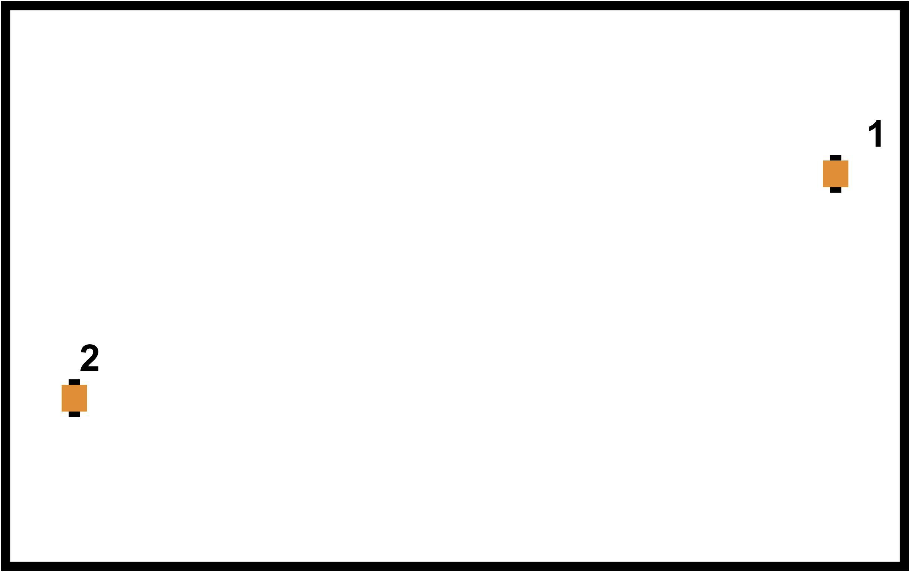
(a) Adaptive PT-CBF, t = 0s
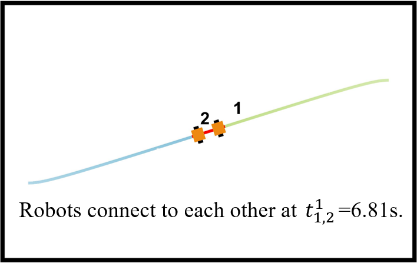
(b) Adaptive PT-CBF, t = 6.81s
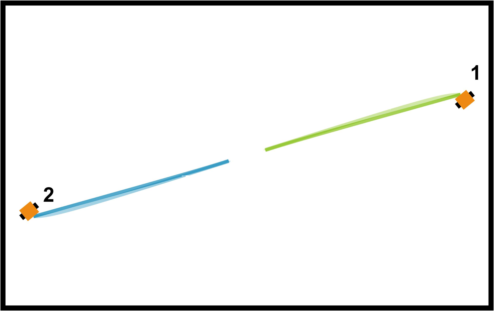
(c) Adaptive PT-CBF, t = 15s
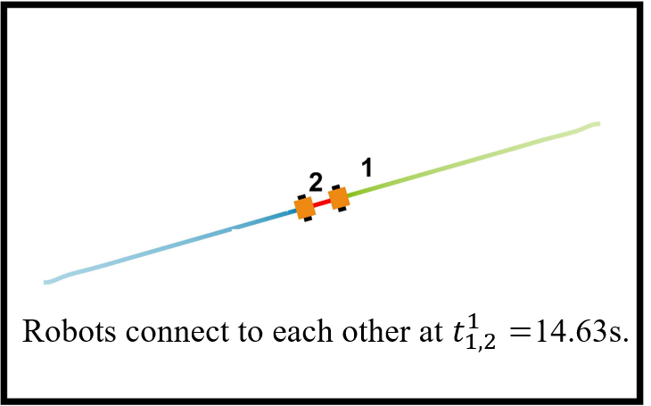
(d) FT-CBF, t = 15s
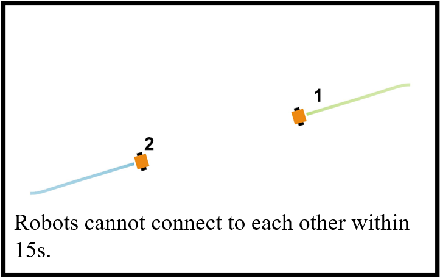
(e) PT-CBF (Tp = 0.5s), t = 15s
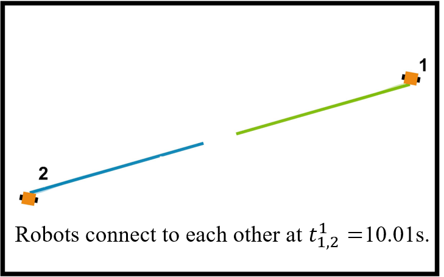
(f) PT-CBF (Tp = 15s), t = 15s
Snapshots comparing reconnection performance for Adaptive PT-CBF, FT-CBF, and PT-CBF.
Adaptive PT-CBF reconnects the robots by 6.81 seconds and maintains smooth motion through the remainder of
the run. FT-CBF remains conservative near the boundary, while fixed PT-CBF settings can be either too
aggressive to be feasible or too slow to react.
(a) Spatio-Temporal weight
(b) Rc2 - Di,j2
(c) Inter-robot distance
(d) Average speed
Comparison of the reconnection process under Adaptive PT-CBF, FT-CBF, and PT-CBF. The plots show the
spatio-temporal weight, communication-barrier value, inter-robot distance, and average speed.
All methods share the same trigger-weight schedule for a fair comparison, but Adaptive PT-CBF reaches the
communication boundary earlier.
Multi-Robot Case
In CoppeliaSim, five Khepera robots patrol separate regions while Robot 1 must reconnect with Robots 2--5 at
least once within each 30-second window. The qualitative and quantitative comparisons below show how Adaptive
PT-CBF preserves the patrol task better than the MCCST [1] baseline that enforces persistent global connectivity.
[1] Wenhao Luo, Sha Yi, and Katia Sycara, "Behavior mixing with minimum global and subgroup connectivity
maintenance for large-scale multi-robot systems," in 2020 IEEE International Conference on Robotics and
Automation (ICRA), IEEE, 2020.
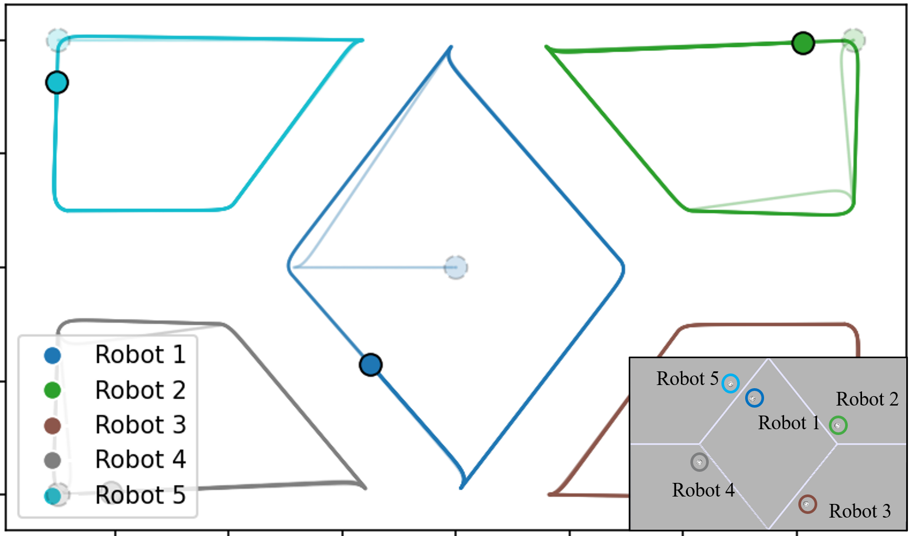
(a) Original task
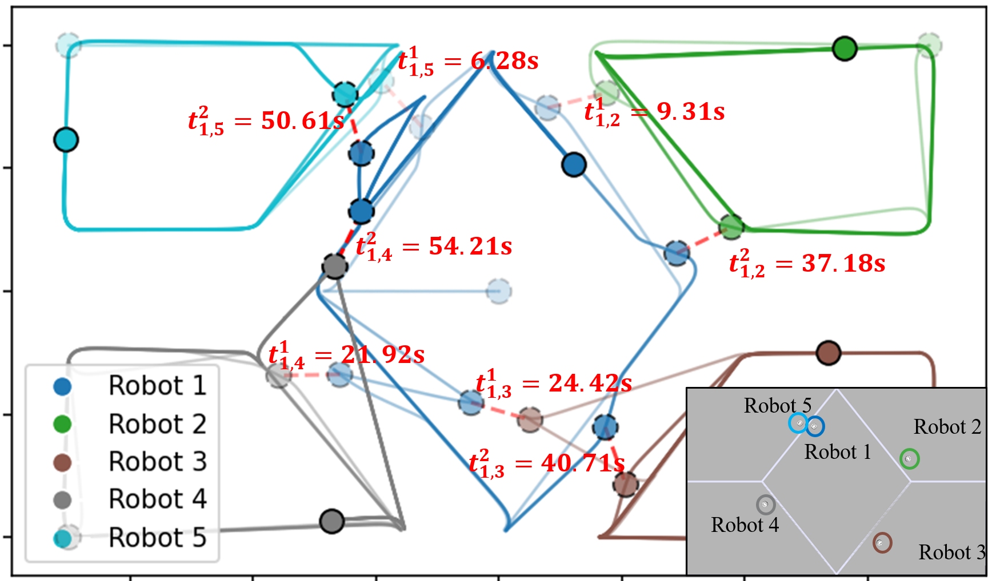
(b) Our Adaptive PT-CBF
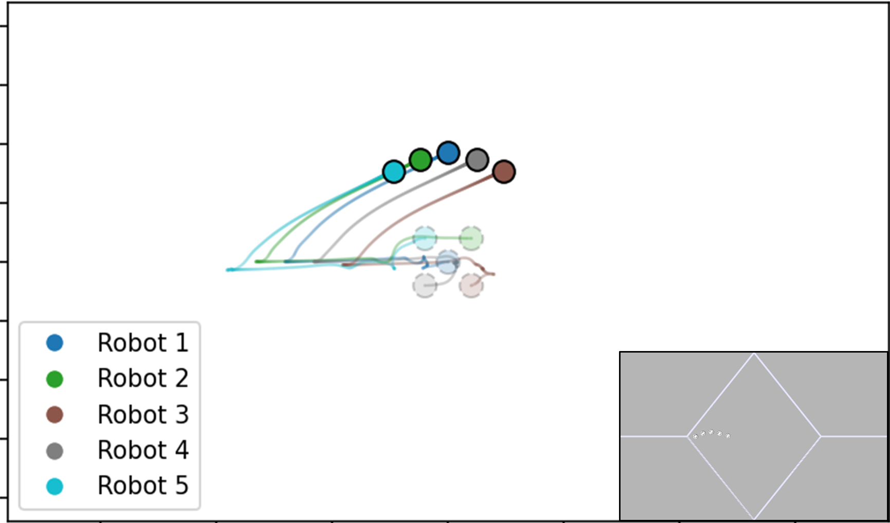
(c) MCCST
Simulation snapshots and trajectories for the original task, Adaptive PT-CBF, and the MCCST baseline.
Adaptive PT-CBF smoothly re-establishes the required communication edges while preserving patrol behavior.
MCCST maintains persistent global connectivity, but that added constraint pulls robots away from their nominal
targets and can leave the team in a connectivity-preserving deadlock.
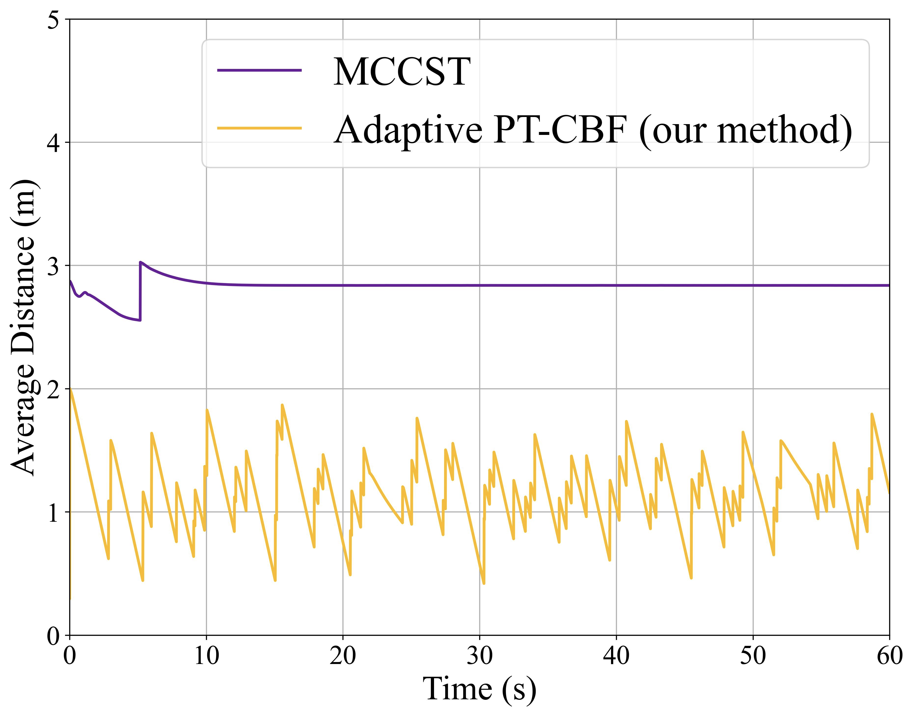
(a) Average distance to target
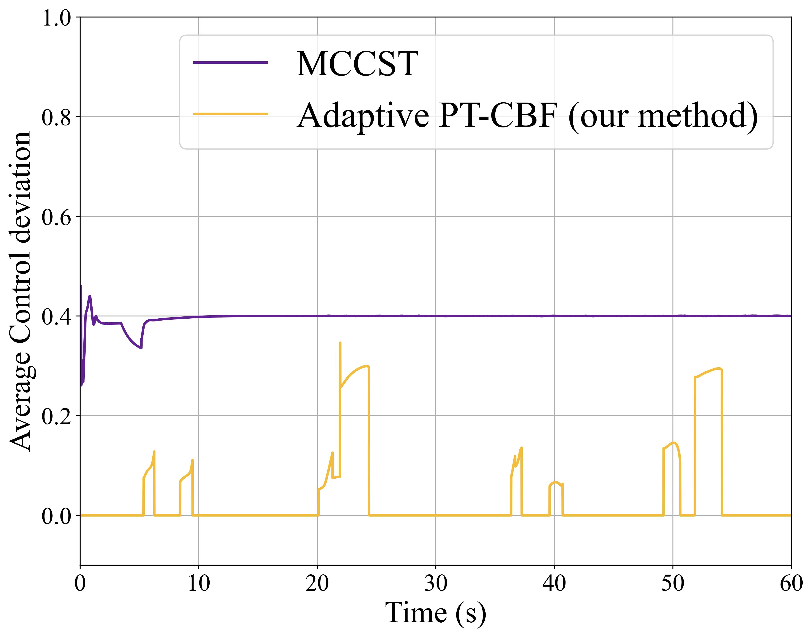
(b) Average control deviation
Comparison between the proposed Adaptive PT-CBF method and the MCCST baseline. The second metric reports
the average control deviation from the nominal controller
1/5 Σi=15 ∥uinom - ui*∥.
Compared with MCCST, Adaptive PT-CBF keeps the robots closer to their assigned patrol targets and reduces
the amount of control modification needed to satisfy the periodic reconnection objective.
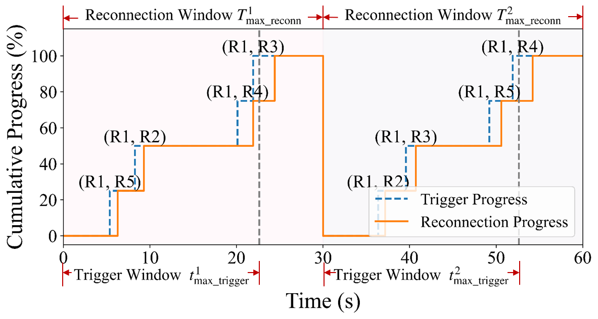
Cumulative trigger and reconnection progress of required communication edges.
The required edges are triggered before the deadline and completed within the same 30-second reconnection
window, matching the joint global connectivity specification in the paper.
Videos
Video comparisons for the multi-robot patrol task. The top row shows the default videos and the bottom row
shows the corresponding simulation videos.
(a) Original Task
(b) Our Adaptive PT-CBF
(c) MCCST
(a) Original Task
(b) Our Adaptive PT-CBF
(c) MCCST
Quantitative Results
We further study how the controller scales with the number of robots and how the reconnection-window duration
Tmaxreconn affects control effort. In both studies, Adaptive PT-CBF preserves efficient
reconnection with limited deviation from the nominal controller.
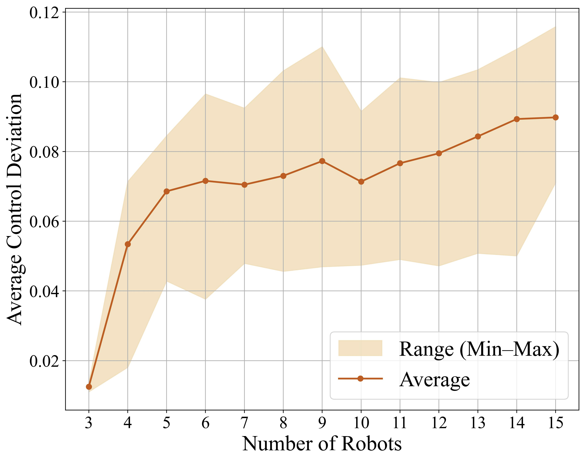
(a) Average control deviation for varying team sizes
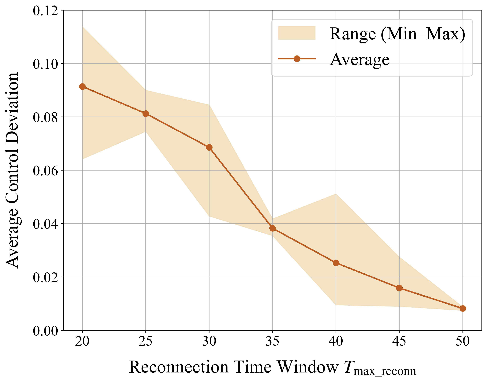
(b) Average control deviation for different reconnection-window durations
Quantitative results of Adaptive PT-CBF for varying team sizes and reconnection-window durations.
Control deviation increases only mildly as the team grows, and it consistently decreases when the robots
are given a longer window to complete the required reconnections.
Conclusion
We present an adaptive prescribed-time CBF framework for spatio-temporal reconnection in multi-robot systems.
The method integrates finite-time and prescribed-time mechanisms to guarantee reconnection within a prescribed
time window, and introduces a spatio-temporal triggering strategy to balance task execution with connectivity
maintenance. Experiments show earlier, smoother, and more reliable reconnection than PT-CBF and FT-CBF baselines.
Acknowledgement
This work was supported in part by the U.S. National Science Foundation under Award 2528997.